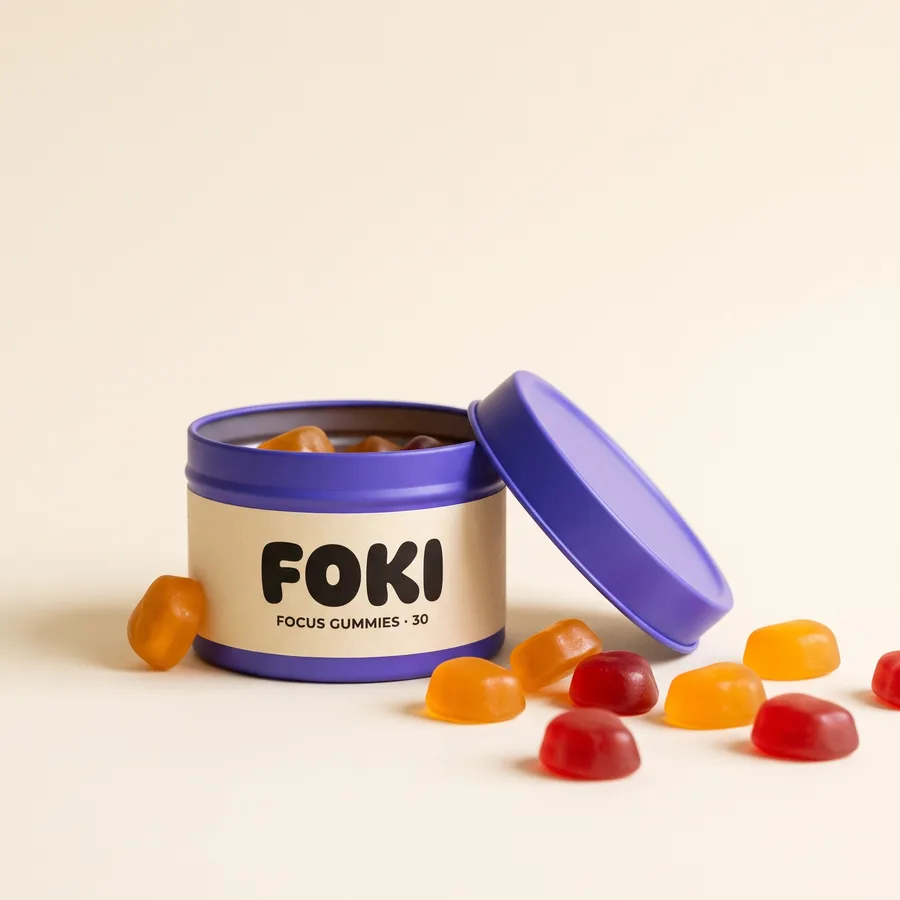
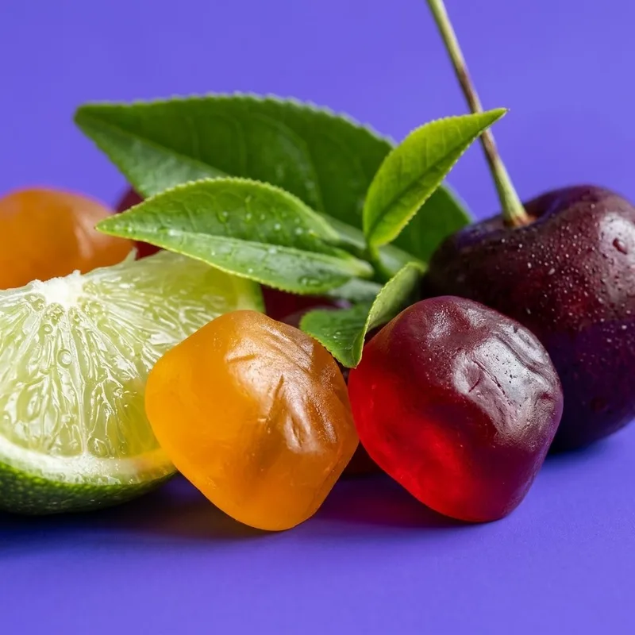

🥱
Útlum ve dvě odpoledne
Ranní kafe vyprchá a na seminárce jedeš na autopilota.
Jeden FOKI = půl espressa + L-theanin. Klidná energie na učení, kterou máš v kapse. Žádná plechovka, žádný cukr, žádný crash ve dvě odpoledne.

Mluvili jsme se studenty z Brna. Tohle jsou tři věci, které slyšíme pořád dokola.
Ranní kafe vyprchá a na seminárce jedeš na autopilota.
Buší srdce, třesou se ruce a večer nemůžeš usnout. Plus 27 g cukru navíc.
Tři kávy denně v bufetu jsou za měsíc víc, než dáš za kolej na týden.
Kofein tě nakopne, L-theanin ze zeleného čaje ho zklidní. Kombinace v poměru 1:2 je nejprobádanější duo pro „klidnou bdělost“. Gummy si dáš kdykoli – bez vody, bez kavárny.
Obsahuje kofein. Nedoporučuje se pro děti a těhotné či kojící ženy. Max. 4 kusy denně. Doplněk stravy, nenahrazuje pestrou stravu. 18+.

15–20 minut před učením, přednáškou nebo zkouškou. Rozžvýkej, nepotřebuješ vodu.
Potřebuješ víc? Druhý kus = celé espresso. Denně max. 4 kusy, poslední do 16:00 kvůli spánku.
Zapiš si učení do FOKI Clubu a sbírej body na další dózu.
| Parametr | FOKI gummy | Energy drink 0,25 l | Espresso | Gaming tablety |
|---|---|---|---|---|
| Kofein na dávku | 40 mg (dávkovatelné) | 80 mg | ~80 mg | různé |
| L-theanin proti třesu | ✓ 80 mg | ✗ | ✗ | často ✓ |
| Cukr | 0 g přidaného | až 27 g | dle chuti | 0 g |
| Do kapsy na přednášku | ✓ | ✗ plechovka | ✗ | ✓ |
| Cena za dávku | 12–15 Kč | 30–45 Kč | 55–70 Kč | ~20 Kč |
Orientační hodnoty pro ilustraci. Obsah kofeinu v kávě se liší podle přípravy.
Se studentským kódem FOKISTUDENT máš −10 % na první objednávku. Doprava zdarma od 699 Kč.
10 ks · na vyzkoušení
149 Kč
14,90 Kč / kus
dóza 30 ks každý měsíc
379 Kč / měs.
12,60 Kč / kus · −15 %
30 ks · jednorázově
449 Kč
14,97 Kč / kus
„Potřebuju se soustředit, ne být na drátkách. Gummy mi zní líp než další prášek.“
„40 mg na kus je chytrý. Konečně vím, kolik kofeinu beru, a můžu si dát půlku dávky.“
„Kdyby na obalu jasně stálo, kolik kusů denně je max a že je to 18+, tak bych to zvážila.“
Ukázkové výroky ze simulovaných rozhovorů s AI personami (fáze testování konceptu). Po reálných rozhovorech je nahradíme citacemi skutečných respondentů. Produkt není v prodeji.
Zapisuj si study sessions, drž streak a sbírej body na další dózu. Ukázka aplikace FOKI Club:
Streak 🔥 12 dní
Plán na zkoušku
Tip: dej si 1 FOKI 20 min před zkouškou, ne víc než obvykle.
Tvoje body: 340
Strategie a obsah · produkt, persona, sociální sítě, video
Web a výkon · web, analytika, testování, PPC kampaně
Jeden FOKI gummy obsahuje 40 mg přírodního kofeinu, což je přibližně polovina espressa, a 80 mg L-theaninu.
Maximálně 4 kusy denně (160 mg kofeinu). EFSA považuje za bezpečné pro zdravé dospělé až 400 mg kofeinu denně ze všech zdrojů (káva, čaj, energy drinky) a 200 mg v jedné dávce. Poslední kus si dej nejpozději v 16:00.
Ne. FOKI obsahují kofein a nedoporučují se dětem, těhotným a kojícím ženám ani lidem citlivým na kofein. Prodáváme pouze osobám od 18 let a dóza má dětskou pojistku.
Ne. FOKI jsou bez přidaného cukru (slazené maltitolem a stévií) a veganské – místo želatiny používáme ovocný pektin.
FOKI mají jednoduché a transparentní složení (kofein + L-theanin + B vitamíny), dávkování po 40 mg a formu gummy. Energy drinky obvykle obsahují cukr a nemají L-theanin.
Každý měsíc ti pošleme dózu 30 ks za 379 Kč s dopravou zdarma. Předplatné můžeš kdykoli pozastavit nebo zrušit v účtu.
Nech nám e-mail a pošleme ti kód na Zkouškový sáček za 99 Kč, jakmile spustíme e-shop.
Díky! Kód ti pošleme při spuštění. 🎉